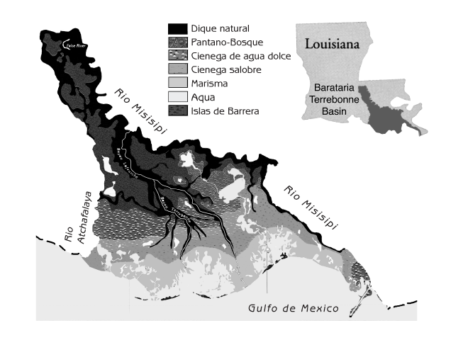
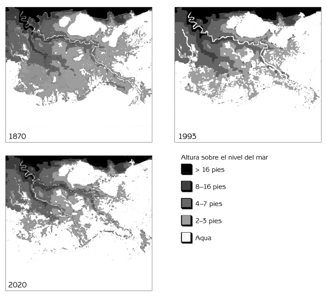

Ecología Humana
Conceptos Básicos para el Desarrollo Sustentable
Autor: Gerald G. Marten
Editorial: Earthscan Publications
Fecha de publicación: November 2001, 256 pp.
Edición en rústica: 1853837148
Edición en pasta dura: 185383713X
Capítulo 12 Ejemplos de Desarrollo Ecológicamente Sustentable
- El Dengue Hemorrágico, los Mosquitos y Copépodos: Un Ejemplo de Eco-Tecnología para el Desarrollo Sustentable
- El Programa del Estero Barataria-Terrebonne: un Ejemplo de Gestión Ambiental Regional
- Puntos de Reflexión
Este capítulo presenta dos casos de estudio que ilustran muchos de los conceptos incluidos en este libro. El primero trata una eco-tecnología, y el segundo es sobre un programa ambiental regional. Participé personalmente en ambos.
En la actualidad hay tantas tendencias contemporáneas que parecen alejarse del desarrollo ecológicamente sustentable. ¿Cómo podemos facilitar el desarrollo sustentable frente a estas tendencias? Estos casos de estudio comienzan mostrando cómo los cambios en el sistema social humano modificaron la interrelación entre personas y ecosistemas de maneras que a su vez han alterado el ecosistema con consecuencias adversas para las personas. Cada caso después ilustra cómo la gente puede traducir sus ideas ambientalistas en acciones concretas para darle un rumbo más sano y sustentable a la interrelación entre personas y ecosistemas.
Estos ejemplos ilustran las recompensas de atender tanto a inquietudes ambientales como sociales de manera balanceada al hacer frente a problemáticas ambientales. No pueden esperarse respuestas eficaces y duraderas cuando las soluciones excluyen la realidad ecológica y se enfocan exclusivamente en consideraciones políticas y económicas, o cuando se enfocan exclusivamente en consideraciones ambientales e ignoran realidades sociales. Los casos de estudio demuestran cómo personas verdaderas son las responsables de desarrollar ideas innovadoras y del proceso para transformarlas en realidad. El desarrollo sustentable no es algo que los demás harán por nosotros. Es algo que todos debemos hacer en conjunto.
El Dengue Hemorrágico, los Mosquitos y Copépodos: Un Ejemplo de Eco-Tecnología para el Desarrollo Sustentable
El dengue hemorrágico es una enfermedad “emergente” que se conoce tan solo desde 1950. Este caso demuestra cómo la modernización puede resultar en problemas de salud pública y cómo la acción comunitaria de enfoque ecológico puede contribuir a soluciones sustentables.
La enfermedad y el mosquito
El dengue es causado por un flavivirus pariente del de la Fiebre Amarilla. Puede que haya originado en primates no-humanos, que siguen siendo su reservorio natural en África y Asia. Los primates no-humanos no muestran síntomas, pero los humanos pueden enfermar de gravedad. Las primeras infecciones de dengue en la niñez suelen ser leves y pasar desapercibidas, pero una primera infección en adultos puede ser severa. La mortandad es rara, pero las altas fiebres, escalofríos, dolor de cabeza, vómitos, dolor muscular, dolor de los huesos, y una debilidad extrema que puede durar más de un mes después de resuelta la fiebre hacen que muchos adultos consideren al dengue como la peor enfermedad que han sufrido.
El dengue hemorrágico es una variante más mortífera del dengue. No lo causa otra cepa del virus, sino que surge del hecho que existen cuatro cepas distintas. La infección con una cepa resulta en inmunidad de por vida a esa cepa, pero también crea anticuerpos que incrementan la susceptibilidad de infección por las tres variantes restantes. El dengue hemorrágico normalmente sucede cuando la infección con una cepa es seguida un año o más tarde por una segunda infección con otra cepa. Aproximadamente el 3 por ciento de las segundas infecciones causan dengue hemorrágico, y cerca del 40 por ciento de los casos hemorrágicos entran en un síndrome de choque que puede ser fatal. El síntoma más grave es el desangrado de los vasos capilares a los tejidos y cavidades corporales, a veces acompañado de severas hemorragias gastrointestinales. No existe medicamento para contrarrestar al virus, pero la deshidratación puede tratarse con electrolitos orales en casos leves, o intravenosos en casos severos. La mayoría de las víctimas del dengue hemorrágico tienen menos de 15 años. Sin tratamiento, cerca del 5 por ciento de los casos son fatales, pero con atención adecuada este porcentaje se reduce a menos de 1 por ciento.
El mosquito Aedes aegypti es el vector principal tanto del dengue como de la fiebre amarilla. Originalmente fue un mosquito africano que se reproducía en cavidades de troncos, pero hace mucho que se adaptó a la vida urbana. Los Aedes aegypti ahora se reproducen en contenedores como tanques, pozos, alcantarillas obstruidas, y en objetos que acumulan agua de lluvia, como llantas y frascos. La hembra coloca sus huevos a un costado del contenedor, a pocos milímetros sobre la superficie del agua. Los huevos pueden permanecer así secos durante meses, pero las larvas eclosionan a escasos minutos de que los huevos queden sumergidos en agua. Generalmente esto únicamente sucede al agregársele agua al contenedor, lo cual aumenta la posibilidad de que el contenedor tenga suficiente agua como para que la larva complete su ciclo de desarrollo antes de que se seque el contenedor.
Mientras que el macho se alimenta exclusivamente de fluidos vegetales, las hembras obtienen los nutrientes necesarios para desarrollar sus huevos de la sangre de animales. Cuando la hembra bebe sangre de una persona infectada con dengue, el virus se multiplica en su cuerpo, y entre 7 y 15 días más tarde (dependiendo de la temperatura ambiente) carga suficiente virus para infectar a otras personas. La transmisión del virus se da a tasas más altas en climas tropicales, donde la acelerada reproducción viral a altas temperaturas hace más probable que un mosquito infectado sobreviva lo suficiente para propagar la infección.
Historia del dengue
A partir del siglo XVI con la expansión del colonialismo y comercio Europeo, el mosquito Aedes aegypti se propagó alrededor del mundo, viajando en los contenedores de agua de embarcaciones. Tanto el virus como el mosquito existieron en Asia sin graves consecuencias debido a que la distribución de Aedes aegypti era limitada por Aedes albopictus, un mosquito asiático que a pesar de ser fisiológicamente capaz de transmitir el dengue, en la práctica no ha sido un factor significativo de transmisión en brotes del virus. Los árboles y arbustos abundaban en los pueblos y ciudades de Asia, y Aedes albopictus competía exitosamente con Aedes aegypti mientras había vegetación.
La situación en las Américas fue muy distinta. A falta de competencia de parte de cualquier mosquito como Aedes albopictus, Aedes aegypti prosperó en las ciudades y poblados. Sabemos que Aedes aegypti era común en las Américas debido a las numerosas epidemias de fiebre amarilla que se dieron después de la introducción del virus con el tráfico de esclavos africanos en el siglo XVI. El historial para el dengue no es tan claro porque sus síntomas no lo diferencian de otras enfermedades, pero es probable que el dengue haya sido común en gran parte de las Américas durante siglos. Hubo una epidemia de dengue en Filadelfia en 1780. Y el dengue fue común hasta la década de 1930 en pueblos y ciudades de las costas Atlántica y del Golfo de Estados Unidos.
El dengue probablemente se propagó de la mano con Aedes aegypti, pero sin llamar mucha atención, aún con altas tasas de infección, porque la mayoría de los infectados eran niños cuyos síntomas eras ligeros. Las devastadoras epidemias de fiebre amarilla eran otra cosa. El Aedes aegypti llamó la atención mundial cuando Walter Reed comprobó en 1900 que este mosquito era el responsable de transmitir la fiebre amarilla. Se iniciaron campañas en las Américas para eliminar los focos de reproducción del mosquito alrededor de viviendas. Durante los 1930s la Fundación Rockefeller movilizó un ejército virtual de inspectores gubernamentales en Brasil para identificar y eliminar sitios donde pudiese reproducirse el mosquito. Los inspectores tenían la autoridad legal para entrar a establecimientos, destruir contenedores, aplicar aceite o larvicidas e imponer multas. Fue posible consolidar la erradicación del Aedes aegypti barrio por barrio, sin re-invasiones, porque el mosquito normalmente viaja menos de 100 metros en toda su vida. La campaña fue tan efectiva que para principios de los 1940s, se había erradicado al Aedes aegypti de gran parte del Brasil.
Aunque hubo brotes de algo parecido al dengue hemorrágico en Queensland, Australia en 1897 y de nuevo en Grecia en 1928, no se reconoció la enfermedad de dengue hemorrágico hasta 1956 porque era tan inusual que existiera más de una cepa en la misma región. Todo cambió con la Segunda Guerra Mundial, cuando gran número de personas, junto con las cuatro cepas del dengue, estuvieron rotando en el trópico Asiático. Hubo numerosas epidemias de dengue durante la guerra al introducirse el virus a regiones donde la población carecía de inmunidad. Aparecieron casos con los síntomas del dengue hemorrágico en Tailandia en 1950. La primera epidemia reconocida de dengue hemorrágico se dio en las Filipinas en 1956, seguida de epidemias en Tailandia y otras regiones del Sureste Asiático. El crecimiento urbano desmedido en los países en vías de desarrollo durante las siguientes décadas expandió dramáticamente el hábitat reproductivo de Aedes aegypti. El paisaje urbano brindaba una abundancia de tanques y contenedores que recogían agua pluvial en barrios sin los servicios básicos de agua potable, alcantarillado y recolección de basura. La eliminación de vegetación en las ciudades Asiáticas eliminó la competencia de mosquitos como el Aedes albopictus, facilitando la expansión del Aedes aegypti.
La aparición del DDT en 1943 probablemente demoró la aparición del dengue hemorrágico. El DDT era un milagro. Era inocuo para los vertebrados a concentraciones usadas para matar insectos, y seguía siendo efectivo a meses de su aplicación. En 1955 la Organización Mundial de la Salud comenzó una campaña global para rociar con DDT cada casa en regiones de transmisión del paludismo. Para mediados de los 1960s el paludismo casi había desaparecido de muchas regiones, y al mismo tiempo el Aedes aegypti había desaparecido de gran parte de América Latina y de algunas regiones de Asia, como Taiwán.
El fracaso de la estrategia DDT
El increíble éxito del DDT duró poco tiempo ya que los mosquitos desarrollaron resistencia que rápidamente se extendió por el mundo. Los gobiernos de países en vías de desarrollo no pudieron continuar fumigando cuando las alternativas al DDT, como el malathion, costaban hasta diez veces más. A finales de los 1960s el paludismo regresó con fuerza, y para mediados de los 1970s el Aedes aegypti había regresado a la mayoría de las regiones de las cuales había sido erradicado. El dengue no regresó a los Estados Unidos porque las mallas mosquiteras y los sistemas de aire acondicionado facilitaron una vida tras paredes que redujo el contacto entre las personas y los mosquitos. Sin embargo, las cuatro cepas y el dengue hemorrágico se expandieron rápidamente en el trópico asiático, estableciéndose en ciclos recurrentes de brotes de dengue al circular las cuatro variantes. El dengue hemorrágico incursionó en las Américas en 1981 con una epidemia en Cuba que hospitalizó a 116,000 personas en tres meses. El dengue rápidamente se extendió por gran parte de Latinoamérica, a veces causando epidemias de cientos de miles de personas, pero el dengue hemorrágico era esporádico ya que generalmente circulaba una sola variante regional. Aunque el dengue era común en gran parte del África al sur del Sahara, no fue un gran problema ya que los Africanos en general son resistentes a infecciones severas de dengue.
Las condiciones sociales y políticas para enfrentar al Aedes aegypti han cambiado enormemente desde las campañas contra la fiebre amarilla de principios del siglo pasado. Algunos países ricos han continuado fumigando casas con insecticidas nuevos, otros como Cuba y Singapur han implementado inspecciones domiciliarias y multas para eliminar sitios donde el mosquito se pueda reproducir. Sin embargo, la mayoría de los países carecen de la voluntad política y de los recursos financieros y organizativos necesarios para implementar este tipo de programas. Los larvicidas químicos que matan las larvas del mosquito, y después un larvicida biológico (Bacillus thuringiensis), pudieron usarse para tratar depósitos de agua. Sin embargo, la gente normalmente se muestra indispuesta a aplicar pesticidas al agua. Y aun cuando estén dispuestas, estos deben aplicarse semanalmente para ser efectivos. El costo de adquirir larvicidas y administrar su aplicación a tan gran escala resultó ser superior a la capacidad de cada gobierno que lo intentó. Algunos gobiernos intentaron organizar comités de participación voluntaria para eliminar el hábitat reproductivo del Aedes aegypti – capacitando a amas de casa, por ejemplo, para que limpiaran sus contenedores de agua semanalmente para interrumpir el desarrollo de larvas – pero sin mucho éxito.
No hay vacuna ni medicamento contra el dengue. La única manera de prevenir el mal es eliminando a los mosquitos. Actualmente la batalla contra el mosquito es principalmente a nivel familiar, comprando insecticidas y repelentes para evitar que los mosquitos les molesten por la noche. El efecto sobre Aedes aegypti es limitado, ya que este mosquito es diurno y pasa la mayoría del tiempo descansando en lugares como armarios, fuera del alcance de la fumigación casual. Desde hace años que se intenta desarrollar una vacuna, pero el progreso ha sido muy lento; y una vacuna podría ser riesgosa al aumentar la susceptibilidad al dengue hemorrágico igual que la infección natural. Es típico que los gobiernos hagan poco con respecto al Aedes aegypti hasta que surge una epidemia de dengue o dengue hemorrágico. Entonces aparecen los camiones fumigadores que rocían las calles con malathion, con poco impacto dado que la epidemia ya está bastante avanzada y las hembras de Aedes aegypti se encuentran dentro de las casas, fuera del alcance del pesticida. Aún si la fumigación logra reducir la población de mosquitos, debe repetirse frecuentemente para mantener el impacto. La población de Aedes aegypti puede recuperarse fácilmente en pocos días.
No ha habido una reducción notable en dengue o dengue hemorrágico durante los últimos 20 años. Mundialmente, entre 50 y 100 millones son infectados con dengue cada año. Anualmente hay varios millones de casos severos de dengue, y aproximadamente 500,000 de dengue hemorrágico. La mortalidad sigue siendo alta en algunos países, mientras que otros la han reducido drásticamente con cuidados médicos intensivos. Cada año varios cientos de miles son hospitalizados debido al dengue en Vietnam y Tailandia, pero la mortandad es menos del 0.3 por ciento. Sin embargo, los costos económicos son altos. Cada paciente requiere de entre una y tres semanas de hospitalización, y los padres faltan al trabajo mientras cuidan de sus hijos. El cambio climático podría extender el rango geográfico del dengue, al facilitarse la transmisión con mayores temperaturas, y consecuentemente menores tiempos de incubación.
Copépodos al rescate
Aunque el control biológico del Aedes aegypti con depredadores de larvas nos ofrece la posibilidad de funcionamiento continuo sin la necesidad de aplicaciones frecuentes como requieren los pesticidas, no se le consideró seriamente al colapsar la estrategia del DDT. Previo a la era del DDT el uso de peces que se alimentaban de larvas de mosquitos era herramienta común en la lucha contra el paludismo. Pero el uso de peces contra el Aedes aegypti fue limitado por el alto costo de los mismos y porque no sobrevivían mucho tiempo en la mayoría de los contenedores de agua. Además, mucha gente simplemente no quería peces en sus cisternas, particularmente si el agua era para beber. Es sabido que muchos animales acuáticos como las planarias, ninfas de libélulas y otros bichos acuáticos se alimentan de larvas de mosquitos, pero ninguno resultaba lo suficientemente efectivo y práctico como para darle uso operativo. Los profesionales en las áreas de control de mosquitos y salud pública, que toda su vida dependieron fuertemente de pesticidas químicos, consideraron el control biológico como una fantasía utópica. Las escasas oportunidades remunerativas desalentaban la inversión e investigación por parte del sector privado.
Esta era la situación hace aproximadamente 20 años, cuando de manera independiente científicos de Tahití, Colombia y Hawai descubrieron la supervivencia nula del larvas de Aedes aegypti en contenedores donde estaba presente el copépodo Mesocyclops aspercornis. Los copépodos son pequeños crustáceos ecológicamente distintos de los demás invertebrados que se alimentan de larvas de mosquitos. Si las larvas son numerosas, los copépodos comen solo una pequeña parte de cada larva, lo cual le permite a cada copépodo matar entre 30 y 40 larvas cada día, un número muy superior al que realmente comen. De mayor importancia son sus altos números. Los copépodos se alimentan de pequeños animales hasta dos veces más grandes, pero también comen fitoplancton, protozoarios y rotíferos –una dieta que brinda suficiente alimento para convertir a los copépodos en los depredadores más abundantes de la mayoría de los hábitat acuáticos. La capacidad total de una población de copépodos para matar larvas de mosquitos, es enorme. La mayoría de los copépodos son demasiado pequeños (entre 0.3 – 1.2 milímetros de longitud) para cazar hasta la más pequeña de las larvas de mosquitos. Pero el Mesocyclops aspericornis y otras especies mayores (1.2 y más milímetros) atacan y consumen larvas recién nacidas sin titubear. Aproximadamente un 10 por ciento de las aguas donde se pueden reproducir los mosquitos tienen poblaciones naturales de Mesocyclops u otros copépodos mayores, los cuales drásticamente reducen la supervivencia de las larvas de mosquitos.
![Figura 12.1 Mesocyclops (longitud real aproximada de 1.5 milímetros). Nota: Los Copépodos no tienen ojos; un disco visual en el centro de la frente detecta luz pero no forma una imagen. Los copépodos se mueven “remando” rápidamente sus antenuelas (las estructuras largas que nacen al frente y se extienden a los lados). Las antenuelas contienen órganos sensoriales mecánicos que detectan las vibraciones en el agua, permitiendo al copépodo detectar la presencia de animales pequeños como las larvas de mosquito y capturarlos como alimento. Las hembras llevan huevos a los costados durante tres días hasta que eclosionan los copépodos juveniles.](images/12-01-spanish.gif)
Figura 12.1 Mesocyclops (longitud real aproximada de 1.5 milímetros). Nota: Los Copépodos no tienen ojos; un disco visual en el centro de la frente detecta luz pero no forma una imagen. Los copépodos se mueven “remando” rápidamente sus antenuelas (las estructuras largas que nacen al frente y se extienden a los lados). Las antenuelas contienen órganos sensoriales mecánicos que detectan las vibraciones en el agua, permitiendo al copépodo detectar la presencia de animales pequeños como las larvas de mosquito y capturarlos como alimento. Las hembras llevan huevos a los costados durante tres días hasta que eclosionan los copépodos juveniles.
Lo mismo que sucede en la naturaleza puede lograrse introduciendo a especies indicadas de copépodos a sitios que los carecen. Este principio se aplica no solo a contenedores donde se reproduce el Aedes aegypti, sino también a hábitat acuáticos donde se reproduce el mosquito Anófeles que transmite el paludismo. Las larvas de mosquitos con paludismo son escasas en hábitat que contienen poblaciones naturales de especies mayores de Mesocyclops. Los Anófeles desaparecieron al introducirse Mesocyclops a arrozales y pantanos de Louisiana, en EUA. Lamentablemente el potencial de Mesocyclops para controlar el paludismo no se ha desarrollado porque las agencias encargadas de controlar el paludismo han abandonado sus esfuerzos por controlar los mosquitos. Actualmente el control del paludismo se basa casi exclusivamente en farmacéuticos cuya efectividad a largo plazo es dudable debido a la abundante resistencia entre los parásitos que causan la enfermedad.
El desarrollo del control de dengue con copépodos ha sido mucho más exitoso porque son eficaces y fáciles de usar en los contenedores donde se reproduce Aedes aegypti. Es inusual que los copépodos invadan contenedores antropogénicos por su propia cuenta; pero prosperan al ser introducidos, independientemente del abasto de larvas de mosquito. Las poblaciones de copépodos pueden variar entre cientos en una llanta y miles en una cisterna. Las especies mayores normalmente matan a mas del 99 por ciento de las larvas de Aedes aegypti, y sobreviven en el contenedor mientras éste contenga agua. Aún sin agua pueden sobrevivir mientras el ambiente permanezca húmedo.
El ciclo de vida sencillo de los copépodos y su capacidad para prosperar en una dieta de protozoarios permite que su producción masiva sea fácil y económica. El sistema de producción utiliza bacterias sobre trigo en descomposición como alimento para un pequeño protozoario (Chilomonas) que a su vez sirve de alimento para copépodos juveniles y otro protozoario mayor (Paramecium caudatum) que a su vez es alimento para los copépodos adultos. El sistema es sencillo, barato, altamente resiliente y funciona en contenedores abiertos de cualquier tamaño y forma. Cien hembras adultas producen aproximadamente otras 25,000 hembras adultas en un mes. Las hembras son inseminadas durante su adolescencia y no requieren de más contacto con los machos para seguir produciendo entre 50 y 100 huevos por semana durante el resto de su vida, que dura varios meses.
Una vez que se conoció la efectividad de los copépodos, se iniciaron investigaciones en Australia, el sudeste Asiático y las Américas para identificar las mejores especies de copépodo y cómo utilizarlas para el control de larvas de mosquito. Siempre hubo especies disponibles localmente porque existen naturalmente especies suficientemente grandes para comer larvas de mosquito en todas las regiones donde el Aedes aegypti es un problema. Mesocyclops aspericornis es la especie más eficaz en Polinesia, Australia y partes de Asia. Mesocyclops longisetus, la especie de Mesocyclops más grande del mundo, resultó ser la más efectiva en las Américas.
Para que un copépodo controle efectivamente al Aedes aegypti debe hacer mas que matar larvas de mosquitos. Debe sobrevivir fácilmente en contenedores. Mesocyclops aspericornis y Mesocyclops longisetus sobreviven en contenedores expuestos al sol tropical porque toleran temperaturas acuáticas de hasta 43 grados centígrados. Además, por su tendencia a aferrarse al fondo y paredes del contenedor, sobreviven en contenedores de los que la gente saca agua frecuentemente. Los copépodos que nadan libremente en el agua rápidamente desaparecen del contenedor. Mesocyclops aspericornis y Mesocyclops longisetus son eficaces en pozos, cisternas, tanques de cemento, barriles, jarrones, floreros y hasta bromelias siempre y cuando tengan agua continuamente. La gente no se opone a la presencia de copépodos en su agua porque estos pequeños animales son poco visibles. Además, no es inusual que otra microfauna viva en el agua.
Los copépodos no sobreviven en pequeños contenedores o llantas que se secan con frecuencia, aunque sobreviven en llantas que continuamente se llenan de agua durante la temporada de lluvias. No sobreviven en pequeños tanques de cemento donde el agua es reemplazada rápidamente, particularmente si el agua se drena, y mueren cuando se limpia el tanque con cloro o le escurre cloro al limpiar ropa junto al tanque. Una dificultad importante es la pérdida de copépodos al limpiarse el contenedor. Esto puede evitarse guardando una pequeña cantidad de agua del contenedor previo a la limpieza y regresándola al contenedor terminada la limpieza. En proyectos piloto a pequeña escala en Honduras y Brasil, las amas de casa rápidamente aprendieron a evaluar sus contenedores, manteniendo orgullosamente a los Mesocyclops en su hogar. La clave del éxito fue la atención personal de los organizadores comunitarios. Lamentablemente las burocracias de salud pública de Latinoamérica parecen carecer la capacidad organizadora para expandir el uso de Mesocyclops a mayor escala.
Éxito en Vietnam
El dengue hemorrágico es un problema serio en Vietnam, ya que ha hospitalizado a casi dos millones de vietnamitas y matado a más de 13,000 niños desde su aparición hace 40 años. La primera demostración de la efectividad de Mesocyclops a escala comunitaria comenzó en 1993, cuando científicos del Instituto Nacional de Higiene y Epidemiología de Vietnam introdujeron especies locales de Mesocyclops a todos los contenedores de almacenaje de agua en Phanboi, una aldea de 400 casas en el norte de Vietnam. Al igual que el resto del Vietnam rural, las dos fuentes de Aedes aegypti en Phanboi eran cisternas de cemento (con capacidad de varios miles de litros), que casi cada casa tiene para almacenar agua pluvial, y jarrones de barro (con capacidad de entre 20 y 200 litros) utilizados para almacenar agua para uso inmediato. Los Mesocyclops prosperaron en las grandes cisternas de cemento, que rara vez se limpian. También sobrevivieron en los grandes jarrones, pero no en los pequeños porque estos eran vaciados frecuentemente. La introducción de Mesocyclops a los pozos creó un reservorio que continuamente repoblaba los jarrones.
La población de Aedes aegypti en Phanboi disminuyó en aproximadamente un 95 por ciento en el año después de la introducción de Mesocyclops. Sin embargo, Aedes aegypti seguía reproduciéndose en pequeños contenedores como latas y botellas que recolectaban agua pluvial, pero que no podían ser tratados con Mesocyclops. Se motivó a los aldeanos a participar más activamente, y la motivación fue alta por la historia reciente de brotes de dengue hemorrágico. El sistema político socialista fue la base de una veloz movilización comunitaria que fue exhaustiva y continua. La agrupación de mujeres educó a los aldeanos en el uso de Mesocyclops y los organizó para poblar contenedores tomando una pequeña cantidad de agua de contenedores con Mesocyclops y transfiriéndola a contenedores que aún no lo tenían. El programa existente de reciclaje fue reorganizado para garantizar que latas y botellas no colectaran agua mientras se esperaba su recolección. Dentro de pocos meses desapareció el Aedes aegypti y en los siete años subsiguientes no se ha vuelto a detectar ni el mosquito ni sus larvas. La desaparición de Aedes aegypti fue significativa porque fue la primera vez en mas de 20 años que se documentara la erradicación, aún a nivel local, de cualquier tipo de mosquito en cualquier parte del mundo, y se logró sin pesticidas.
Se introdujo Mesocyclops a otras aldeas del norte de Vietnam, y de nuevo desaparecieron los Aedes aegypti. Vale la pena notar que Aedes aegypti desapareció aún sin tener Mesocyclops en todos y cada uno de los contenedores. El éxito probablemente se debió al “efecto trampa de huevos”. Las hembras ponedoras no discriminan entre contenedores con y sin Mesocyclops, y desperdician sus huevos en contenedores con Mesocyclops en vez de colocarlos en contenedores con mayores posibilidades de supervivencia para sus larvas. Simulaciones computarizadas indican un colapso en la población del mosquito si un 90 por ciento de los contenedores tienen Mesocyclops. En contraste, eliminando el 90 por ciento de los contenedores solo reduce la población de mosquitos en el modelo computarizado en un 90 por ciento.
El éxito demostrado en Phanboi fue fundamental para movilizar el apoyo por parte del gobierno y de fuentes de asistencia financiera internacional para distribuir Mesocyclops a más comunidades en Vietnam. La publicidad televisiva y programas didácticos escolares han familiarizado a la sociedad Vietnamita con Mesocyclops. Una línea telefónica de asistencia gubernamental conecta a comunidades interesadas con trabajadores de sanidad quienes les proveen de Mesocyclops y explican su uso. Un sencillo sistema de producción masiva en el Instituto Nacional de Higiene y Epidemiología de Vietnam utiliza barriles de plástico de 150 litros para producir varios cientos de miles de Mesocyclops por mes, a un costo muy bajo.
El programa sigue el modelo de Phanboi. El personal central capacita al personal de sanidad local, que a su vez utilizan documentales en videocasete para introducir a Mesocyclops a la comunidad. El personal de sanidad capacita a maestros para que organicen a estudiantes para la recolección regular de contenedores chatarra. De las agrupaciones de mujeres, los trabajadores de salud reclutan a colaboradoras voluntarias de confiabilidad demostrada previamente en campañas domiciliarias de planificación familiar e inmunización. Cada colaboradora es responsable de entre 50 y 100 casas, y comienza introduciendo aproximadamente 50 Mesocyclops a la cisterna de una de las casas. En cuanto la población de copépodos crece lo suficiente, la colaboradora toma una cubeta de agua del tanque con Mesocyclops a las demás casas, vertiendo un vaso por cisterna. Las colaboradoras explican el uso de Mesocyclops a cada familia y regresan por lo menos una vez al mes a inspeccionar los contenedores. El programa ha capacitado a 900 trabajadoras de sanidad y el Mesocyclops ha sido distribuido a más de 30,000 hogares en el norte y centro de Vietnam.
En la gran mayoría de las comunidades del programa, se ha repetido la experiencia de Phanboi. Aedes aegypti desaparece por completo aproximadamente un año después de la introducción del Mesocyclops. Las pocas excepciones han sido comunidades urbanas, donde la población de Aedes aegypti ha decaído, pero no desaparecido; la razón es la cobertura incompleta de casas por parte de las colaboradoras. En áreas urbanas que carecen de otros programas de salud domiciliarios, a veces es necesario reclutar colaboradoras cuya confiabilidad no ha sido demostrada. Mientras que la mayoría de las colaboradoras nuevas hacen buena labor, hay algunas que no lo hacen, y sus esfuerzos se ven complicados por la menor cohesión social en las ciudades. Con 12 millones de casas en zonas de dengue, el número potencial a atender es enorme. El cuello de botella en la distribución nacional de Mesocyclops es la capacitación de empleados de sanidad y colaboradoras locales. Algunas provincias están estableciendo sus propios centros de capacitación y de producción de Mesocyclops. El programa tendrá mayores retos al extenderse al sur de Vietnam, donde el clima tropical es ideal para Aedes aegypti y el dengue es transmitido todo el año.
La transportación de gran cantidad de Mesocyclops de los centros de producción a las aldeas puede verse complicada debido a que los copépodos en pequeños contenedores de alta densidad pronto acaban con cualquier alimento. Entonces comienzan a comerse unos a otros. Una solución sencilla surge del hecho que los Mesocyclops pueden sobrevivir durante meses suspendidos en gomaespuma húmeda, donde no pueden moverse para cazarse unos a otros. Cubos de este material son empacados en pequeños contenedores plásticos y se envían por correo a las oficinas de salud pública en todo el país. El cubo de hule espuma con 50 copépodos se coloca en la cisterna para introducirlos al contenedor.
En 1998 Vietnam reportó 234,000 casos de dengue hemorrágico, y esta enfermedad fue responsable de mas muertes que cualquier otra infección. En 1999 el gobierno inició un programa prioritario para combatir el dengue a nivel nacional, con Mesocyclops en un papel central, no solo en la prevención sino también para combatir los brotes de dengue en zonas donde no se ha implementado aún el Mesocyclops. El gobierno ofrece a los empleados de sanidad locales paquetes para el análisis veloz de casos donde se sospeche dengue para que una respuesta de emergencia sea implementada inmediatamente cuando se confirme un caso de dengue. Al incrementar el abasto de Mesocyclops, este será distribuido de manera rutinaria a casas en zonas donde se den brotes de dengue.
Potencial de Mesocyclops en otros países.
¿Pueden otros países replicar el éxito de Vietnam con Mesocyclops? El mayor potencial es en el Sudeste Asiático, donde el dengue hemorrágico es un problema grave, la inquietud pública es alta, y la mayoría de los hábitat reproductivos de Aedes aegypti son similares a los contenedores de agua que han resultado ideales para Mesocyclops en Vietnam. La preocupación pública no es tan alta fuera del Sudeste Asiático, y algunos de los sitios de reproducción no son tan ideales para Mesocyclops. Mientras que el control del dengue en otras regiones requerirá algo más que Mesocyclops y el reciclaje de pequeños contenedores, Mesocyclops es capaz de eliminar al Aedes aegypti de por lo menos algunos tipos de contendores en cualquier lugar donde el dengue es problemático.
La logística de producción y distribución no son obstáculo para extender el uso de Mesocyclops a otros países. La producción es barata y su transporte sencillo. Mientras que la producción y distribución en Vietnam está a cargo de dependencias de gobierno nacionales, provinciales y locales, en otros países podría darse una combinación de gobiernos, organizaciones no-gubernamentales y el sector privado, de acuerdo a condiciones locales. La llave del éxito es la organización comunitaria. Es bastante sencillo poblar y repoblar contenedores con copépodos, pero es fundamental garantizar que todos lo hagan. El éxito puede darse barrio por barrio. Cien casas trabajando juntas pueden librarse de Aedes aegypti aún si las casas alrededor se abstienen de hacer algo al respecto.
La estrategia de mayor potencial es la distribución de Mesocyclops donde existan redes locales que brinden mayor posibilidad de éxito. Vietnam tiene la ventaja de que la mayoría de su dengue ocurre en comunidades rurales con organización comunitaria fuerte y donde ya existen programas domiciliarios de sanidad que funcionan bien. Afortunadamente existen miles de comunidades en todo el mundo que comparten este tipo de redes organizativas para diversos programas de salud, planificación familiar, tratamiento paramédico de paludismo, programas agrícolas, caridades religiosas, y apoyo a pequeños empresarios. Estas mismas redes pueden ser vehículos para la distribución de Mesocyclops y garantizar su uso apropiado a nivel comunitario. Hasta las redes de mercado del sector privado, que tan efectivamente distribuyen insecticidas y repelentes pudieran desarrollar un papel si se incentiva el uso comunitario. Con cada éxito, el efecto demostrativo fomentará que cada vez más comunidades se organicen para el uso exitoso del Mesocyclops.
Conclusiones
¿Qué nos dice este caso de estudio del dengue hemorrágico? En primer lugar demuestra cómo las actividades humanas crean condiciones ambientales que determinan si una enfermedad abundará o desaparecerá. El transporte internacional creó el dengue hemorrágico al mover las cuatro cepas de dengue por todo el mundo. El dengue desaparece cuando la gente elimina las oportunidades para que Aedes aegypti se reproduzca en contenedores de agua alrededor de sus casas.
En segundo plano, demuestra cómo la erradicación local de mosquitos es posible con un manejo ecológico. Una estrategia ecológica de control de enfermedades que integra una variedad de métodos es más efectiva que una estrategia basada exclusivamente en pesticidas. Podemos esperar que los métodos ecológicos sean sustentables. Es poco probable que las larvas desarrollen una resistencia a Mesocyclops.
En tercer lugar, ilustra el nivel de esfuerzo necesario para el éxito. Actualmente los esfuerzos prevalecientes en todo el mundo no cumplen con este estándar. Ni cumplen con el estándar de la campaña contra la fiebre amarilla que erradicó al Aedes aegypti de gran parte de Brasil hace 60 años, una campaña que debió su éxito a su organización y administración intensa y meticulosa.
Finalmente, y de mayor importancia, hace énfasis en el papel central de la comunidad local. El dengue hemorrágico será eliminado únicamente a través de esfuerzos locales intensos y bien organizados. La falta de progreso en general contra el dengue durante los últimos 30 años no es singular. Al cambiar nuestras prioridades personales y públicas, los sistemas de apoyo social en comunidades locales han sido debilitados. Y correspondientemente han decaído numerosas dimensiones del bienestar humano que dependen de comunidades fuertes. Mientras que es responsabilidad de los lugareños mantener una comunidad fuerte y efectiva, el apoyo y asistencia de gobiernos nacionales puede ser decisivo. El desarrollo ecológicamente sustentable, que incluye el control sustentable de enfermedades transmitidas por mosquitos, únicamente será realidad cuando y donde las comunidades sean verdaderamente funcionales.
Bibliografía
- Brown, M, Kay, B and Hendrix, J (1991) ‘Evaluation of Australian Mesocyclops (Copepoda: Cyclopoida) for mosquito control’, Journal of Medical Entomology, vol 28, pp618 - 623
- Christophers, S (1960) Aedes Aegypti (L.). The Yellow Fever Mosquito: Its Life History, Bionomics and Structure, Cambridge University Press, Cambridge
- Focks, D, Haile, D, Daniels, E and Mount, G (1993) ‘Dynamic life table model for Aedes aegypti (Diptera: Culicideae): analysis of the literature and model development’, Journal of Medical Entomology, vol 30, pp1003 - 1017
- Halstead, S (1997) ‘Epidemiology of dengue and dengue hemorrhagic fever’ in Gubler, D and Kuno, G (eds) Dengue and Dengue Hemorrhagic Fever, CAB International, New York
- Halstead, S (1998) ‘Dengue and dengue hemorrhagic fever’ in Feigin, R and Cherry, J (eds) Textbook of Pediatric Infectious Diseases, W B Sanders, Philadelphia
- Halstead, S and Gomez-Dantes, H (eds) (1992) Dengue - a worldwide problem, a common strategy, Proceedings of an International Conference on Dengue and Aedes aegypti Community-based Control, Mexican Ministry of Health and Rockefeller Foundation, Mexico
- Marten, G (1984) ‘Impact of the copepod Mesocyclops leuckarti pilosa and the green alga Kirchneriella irregularis upon larval Aedes albopictus (Diptera: Culicidae)’, Bulletin of the Society for Vector Ecology, vol 9, pp1 - 5
- Marten, G, Astaeza, R, Suárez, M, Monje, C and Reid, J (1989) ‘Natural control of larval Anopheles albimanus (Diptera: Culicidae) by the predator Mesocyclops (Copepoda: Cyclopoida)’, Journal of Medical Entomology, vol 26, pp624 - 627
- Marten, G (1990) ‘Evaluation of cyclopoid copepods for Aedes albopictus control in tires’, Journal of American Mosquito Control Association, vol 6, pp681 - 688
- Marten, G (1990) ‘Elimination of Aedes albopictus from tire piles by introducing Macrocyclops albidus (Copepoda, Cyclopoida)’, Journal of American Mosquito Control Association, vol 6, pp689 - 693
- Marten, G, Bordes, E and Nguyen, M (1994) ‘Use of cyclopoid copepods for mosquito control’, Hydrobiologia, vol 292/293, pp491 - 496
- Marten, G, Borjas, G, Cush, M, Fernández, E, and Reid, J (1994) ‘Control of larval Ae. aegypti (Diptera: Culicidae) by cyclopoid copepods in peridomestic breeding containers’, Journal of Medical Entomology, vol 31, pp36 - 44
- Marten, G, Thompson, G, Nguyen, M and Bordes, E (1997) Copepod Production and Application for Mosquito Control, New Orleans Mosquito Control Board, New Orleans, Louisiana
- Riviere, F and Thirel, R (1981) ‘La predation du copepods Mesocyclops leuckarti pilosa sur les larves de Aedes (Stegomyia) aegypti et Ae. (St.) polynesiensis essais preliminaires d’utilization comme de lutte biologique’, Entomophaga, vol 26, pp427 - 439
- Nam, V, Yen, N, Kay, B, Marten, G and Reid, J (1998) ‘Eradication of Aedes aegypti from a village in Vietnam, using copepods and community participation’, American Journal of Tropical Medicine and Hygiene, vol 59, pp657 - 660
- Soper, F, Wilson, D, Lima, S and Antunes W (1943) The Organization of Permanent Nation-wide anti-Aedes aegypti Measures in Brazil, The Rockefeller Foundation, New York
- Suarez, M, Ayala, D, Nelson, M and Reid, J (1984) ‘Hallazgo de Mesocyclops aspericornis (Daday) (Copepoda: Cyclopoida) depredador de larvas de Aedes aegypti en Anapoima-Colombia’, Biomedica, vol 4, pp74 - 76
El Programa del Estero Barataria-Terrebonne: un Ejemplo de Gestión Ambiental Regional
Los estuarios o esteros son ecosistemas donde los ríos se extienden sobre una gran área al llegar al mar. Mucha del agua en los estuarios es una combinación de aguas dulces y saladas, mezcladas por las mareas. Los estuarios son excepcionales por su diversidad biológica, su productividad biológica y el valor económico de sus recursos biológicos. Los estuarios también se encuentran entre los ecosistemas más amenazados a nivel mundial. Su riqueza de recursos naturales fomenta su uso intensivo, sobreexplotación y conversión de ecosistemas naturales a ecosistemas agrícolas. Muchos ecosistemas de manglar costero en el Sudeste Asiático han sido convertidos a estanques de acuacultura para satisfacer la demanda mundial de camarón, langostino y pescado. Muchas de las ciudades más grandes del mundo se encuentran en zonas costeras donde las planicies aluviales de esteros adyacentes son utilizadas para producir alimentos para la ciudad. No es inusual que las ciudades en crecimiento se extiendan sobre los esteros cercanos.
El estero Barataria-Terrebonne es el más grande de los Estados Unidos. El sistema estuario cubre un área de 16,835 kilómetros cuadrados, donde el río Misisipi vacía al Golfo de México (Figura 12.2). Es hábitat de aproximadamente 735 especies de mariscos, peces, anfibios, reptiles, aves y mamíferos. Aproximadamente 630,000 personas viven en la región, y su riqueza de recursos naturales es sustento para mucha mas gente que vive fuera del área. El estero Barataria-Terrebonne nos brinda un ejemplo de la problemática ecológica que surge con la explotación intensiva de recursos y cuando los ecosistemas naturales son modificados de manera deliberada o transformados en otro tipo de ecosistema por los humanos. El estero Barataria-Terrebonne es un caso de estudio particularmente instructivo porque los lugareños diseñaron cuidadosamente un programa de acción para movilizar a su comunidad en respuesta a estos problemas. Es una historia exitosa que ilustra el desarrollo adaptativo descrito en el capitulo 11, que demuestra lo que se requiere para hacer realidad el desarrollo adaptativo y lo que se puede lograr con el desarrollo adaptativo.

Figura 12.2 Estero Barataria-Terrebonne. Fuente: BTNEP (1995) Saving Our Good Earth: A Call to Action. Barataria-Terrebonne estuarine system characterization report, Barataria-Terrebonne National Estuary Program, Thibodaux, Louisiana
Descripción e historia del estero
Al igual que otros esteros, el Barataria-Terrebone es un mosaico de paisajes evolucionados en respuesta a la humedad, salinidad y otras gradientes físicas que se extienden de tierra firma, a humedales, a mar abierto; y de agua dulce, a salobre a salada. El estero consiste de tres tipos generales de ecosistemas a lo largo de la gradiente de la elevación de la tierra de alta a baja: pantano o ciénega; marisma; y aguas abiertas (Figura 12.3). (Nota del traductor: Tras consultar diversas fuentes, parece que existe cierto grado de confusión con respecto al uso de los términos “pantano”, “ciénega” y “marisma”. Para simplificar la lectura, se ofrece una breve explicación de cómo son utilizadas en esta traducción. “Pantano” se utiliza para designar un humedal dominado por árboles – equivalente de swamp en inglés. “Ciénega” se refiere a un humedal dominado por pastos – equivalente de marsh en inglés. Mientras que “marisma” se utiliza para nombrar a ciénegas de agua salada – saltwater marsh.) A mayor altura la tierra está suficientemente seca para soportar casas y granjas junto con los bosques deciduos característicos de la región. Gran parte de la tierra es inundada periódicamente, de manera que la tierra permanece húmeda o incluso sumergida bajo varios centímetros de agua la mayor parte del año. El ecosistema natural en estas condiciones es el pantano, un bosque húmedo dominado por cipreses que pueden crecer a gran tamaño durante miles de años. Los pantanos y bosques deciduos ocupan el 19 por ciento del sistema del estero. A menor elevación, con más agua, prevalecen los ecosistemas de ciénega, ocupando un 22 por ciento del sistema del estero. Donde el agua es salada o salobre, las ciénegas y marismas se caracterizan por una densa cubierta de pastos de 0.5 – 1 metro de altura. La fauna mayor de los pantanos y ciénegas incluye osos, venados y lagartos (que pueden llegar a medir más de 4 metros en longitud). El agua que cubre la tierra de menor elevación es demasiado profunda para permitir el crecimiento de árboles o pastos de marisma. Las aguas abiertas ocupan el 37 por ciento del sistema estuario y contiene otros ecosistemas acuáticos.

Figura 12.3 Perfil paisajístico que muestra los tres tipos generales de ecosistemas naturales del estero: pantano, marisma y aguas abiertas. Fuente: Landscape profile showing the three major types of natural ecosystems in the estuary: swamp, marsh and open water Source: BTNEP (1995) Saving Our Good Earth: A Call to Action. Barataria-Terrebonne estuarine system characterization report, Barataria-Terrebonne National Estuary Program, Thibodaux, Louisiana
El estero incluye una impresionante gama de recursos naturales que incluye madera, vida silvestre y mariscos. Además es criadero de numerosas especies de peces de importancia comercial en el Golfo de México. La integridad de los ecosistemas naturales del estero se mantiene gracias a un balance dinámico entre la sedimentación y el hundimiento de la tierra. Es natural que el suelo de los humedales se hunda unos cuantos centímetros por año. Debido al alto contenido de materia orgánica en la tierra, parte de esta materia es degradada mientras que otra parte es comprimida por el peso que lleva encima. La sedimentación depositada sobre la superficie durante inundaciones compensa el hundimiento. Siempre que se de suficiente sedimentación el paisaje topográfico y el balance hidrológico del estero permanecen mas o menos igual año con año.
Al igual que en el resto de Norteamérica, los indígenas habitaron el estero Barataria-Terrebonne durante miles de años. Su población era pequeña y sus exigencias sobre los recursos naturales del estero, modestas. El aprovechamiento intensivo comenzó hace aproximadamente 200 años con la llegada de los pobladores Europeos que talaron los bosques de cipreses, utilizando las tierras de mayor elevación para la agricultura y vivienda. Desde entonces, distintos recursos naturales han sido sujetos a diversas presiones en diferentes épocas, respondiendo a los cambios del mercado y a la sobreexplotación y desaparición de recursos que han forzado a los pobladores de cada región a abandonar cierto recurso para enfocarse en otro. A principios, el musgo que colgaba de los cipreses se cosechaba como relleno de colchones. La tierra fue drenada para cultivos de importancia comercial, como el algodón. La prodigiosa abundancia de peces, camarones, almejas y langostinos fue fuente de empleos para pescadores inmigrantes de numerosos países. Se mataron lagartos, ratas almizcleras, nutrias y visón por sus valiosas pieles. La nutria coypu se introdujo desde Sudamérica a principios del siglo XX como un nuevo recurso para la industria de las pieles. Con el movimiento anti-pieles, el mercado para los productos de nutria ha decaído y las poblaciones de nutrias han explotado y forrajeado excesivamente la vegetación de las ciénegas.
La explotación de los recursos naturales del estero cambiaron el paisaje, pero los mayores cambios se debieron a desarrollos que ganaron ímpetu en el siglo XX. El más conspicuo es la red de canales construida para facilitar la navegación. La intensa explotación petrolera a comienzos de los 1930s incrementó el número de canales, contaminando y dañando a los ecosistemas naturales. La construcción de diques y otras obras públicas para controlar las inundaciones alteraron por completo los patrones de circulación de agua, inundaciones y sedimentación que mantenían en balance a los ecosistemas del estero. Estos cambios detonaron efectos en cadena que resonaron por todo el estero. Para los 1980s los ecosistemas naturales del estero estaban en un proceso de deterioro alarmante. Los recursos naturales de que dependían tantos habitantes del estero se encontraban gravemente amenazados. Algunas familias estaban perdiendo las tierras sobre las cuales habían construido sus casas.
Problemas ecológicos
Cambio en el flujo natural del agua. Los canales para la navegación, y para la exploración y extracción de hidrocarburos, permiten que las mareas de agua salada penetren tierra adentro. Esta intrusión de agua salina aumenta la salinidad en algunas partes del estero, alterando la comunidad biológica a favor de flora y fauna que toleran la alta salinidad, y que anteriormente se daban únicamente cerca del mar. Esta mayor salinidad puede matar a gran número de cipreses, particularmente cuando el agua salada es traída por las marejadas poderosas de tormentas y huracanes. Los canales también aumentan la erosión debida al oleaje, resultando en una mayor pérdida de suelos dentro del estero. Los materiales dragados de canales son amontonados en las orillas, obstruyendo el flujo natural, causando estancamientos de agua en algunos sitios, secando otros y evitando la sedimentación en otros más. Los diques evitan que las aguas y sedimentación de ríos lleguen a los humedales aledaños. La mayoría del sedimento del río Misisipi (200 millones de toneladas métricas por año) es canalizado a lo largo del estero y depositado en el Golfo de México.
Disminución en sedimentación. El río Misisipi actualmente lleva 80 por ciento menos sedimento que hace un siglo. Las medidas de conservación de tierras a lo largo de la cuenca del Misisipi han reducido la cantidad de sedimento que cursa por el río, y diversas estructuras (presas y esclusas) reducen el flujo de manera que el sedimento es depositado antes de llegar al estero. Aún así, el Misisipi contiene suficiente sedimento como para formar tierras nuevas que no están aisladas del río por diques. Mientras que las inundaciones del pasado depositaban el sedimento a lo largo de todo el estero, actualmente existen muchas partes del estero que no reciben sedimentación del Misisipi porque los diques no lo permiten.
Pérdida de tierras y cambios de hábitat. Cuando el hundimiento natural de los humedales no es compensado con sedimentación, resulta en el hundimiento de tierras. Aumenta la profundidad del agua, alterando a la comunidad biológica. Los pantanos se convierten en ciénegas, y las ciénegas en agua abierta (véase las Figuras 12.4 y 12.5). Esta pérdida de tierras es agravada por la erosión debida al oleaje y por actividades humanas como la draga y construcción de canales, y por el aumento en el nivel del mar debido al cambio climático. Gran parte de los suelos perdidos han sido de las regiones de marisma salada (Figura 12.2), la más cercana al mar. La pérdida es más severa donde las nutrias han arrasado con los pastos que amarran la tierra. Durante la década de los 1980s, se perdían 54 kilómetros cuadrados (el 0.8 por ciento del total del área total de humedales en el estero) cada año. Durante los 1990s la taza de erosión disminuyó, en parte porque la tierra fácilmente erosionable ya había desaparecido.

Figura 12.4 Cambio en la topografía del estero Barataria-Terrebonne durante los últimos 130 años, y proyección de los próximos 20 años de un modelo computacional. Fuente: datos de Barataria-Terrebonne National Estuary Program, Thibodaux, Louisiana.
![Figura 12.5 Una sección de 110 kilómetros cuadrados del estero que ha sufrido una transformación drástica de marisma a mar durante los últimos 50 años (Leeville, Louisiana). Nota: “Agua” en el mapa incluye gcanales y mar. La marisma “Clase 1” tiene la menor cantidad de agua, y la “Clase IV” la mayor cantidad de agua. Fuente: BTNEP (1995) Saving Our Good Earth: A Call to Action. Barataria-Terrebonne estuarine system characterization report, Barataria-Terrebonne National Estuary Program, Thibodaux, Louisiana.](images/12-05-spanish.gif)
Figura 12.5 Una sección de 110 kilómetros cuadrados del estero que ha sufrido una transformación drástica de marisma a mar durante los últimos 50 años (Leeville, Louisiana). Nota: “Agua” en el mapa incluye gcanales y mar. La marisma “Clase 1” tiene la menor cantidad de agua, y la “Clase IV” la mayor cantidad de agua. Fuente: BTNEP (1995) Saving Our Good Earth: A Call to Action. Barataria-Terrebonne estuarine system characterization report, Barataria-Terrebonne National Estuary Program, Thibodaux, Louisiana.
Eutrofización. Las aguas residuales y agrícolas contienen nutrientes para la flora, tales como el nitrógeno, fósforo y silicio, que fomentan el crecimiento de algas y otras plantas que consumen grandes cantidades de oxígeno durante la noche y que eventualmente remueven cantidades mayores de oxígeno del agua al morir y descomponerse. Los efectos de las bajas concentraciones de oxígeno en el agua son particularmente obvias cuando resultan en la muerte masiva de peces.
Patógenos. Las aguas residuales contaminan el estero con virus y bacterias que se concentran en mariscos, creando un riesgo a la salud pública y reduciendo los ingresos por estos recursos.
Tóxicos. Aunque el río Misisipi llega al estero tras haber recibido desechos industriales y domésticos a lo largo de mas de mil millas, la contaminación se ha reducido notablemente en décadas recientes Mientras que el rió contiene cantidades inaceptables de nitrógeno y atrazina (un herbicida utilizado en los maizales), el río Misisipi en sí no es fuente significativa de contaminantes para el estero. Virtualmente toda la contaminación del estero se debe a sustancias vertidas en el estero mismo. Estos incluyen: herbicidas para controlar el crecimiento del jacinto de agua y otras plagas que obstruyen la navegación en los canales; emisiones de las industrias químicas y petroleras en secciones aledañas del río Misisipi; contaminación de embarcaciones, derrames de petróleo, y otros contaminantes asociados con la producción de hidrocarburos; el aflujo de aguas agrícolas o urbanas que contienen pesticidas, químicos para jardines y hortalizas, y aceites automotores; la filtración de desechos tóxicos, como metales pesados y una variedad de sustancias cancerígenas. Muchas de estas sustancias se acumulan en la cadena alimenticia y son una amenaza a la salud humana.
Cambios en recursos vivientes. Al disminuir el área de los humedales, el número de plantas y animales dentro de estos ecosistemas cae de manera correspondiente. La sobreexplotación y contaminación también pueden tener impactos adversos sobre la flora y fauna. Durante los 1960s casi desaparecieron del estero las águilas blancas y pelícanos pardos debido al uso agrícola del DDT. El uso del DDT se descontinuó a principios de los 1970s, por lo que las poblaciones de ambas aves se han recuperado en años recientes. Las especies exóticas introducidas compiten con las especies nativas. Las nutrias consumen casi toda la vegetación de un área de 4 kilómetros cuadrados de ciénega cada año. En el 2000, la muerte repentina del pasto Spartina por causas aún desconocidas convirtió cerca de 80 kilómetros cuadrados de ciénega en planicie lodosa y afectó a menor escala otros 900 kilómetros cuadrados de marisma. Desconocemos los efectos que puedan tener los cambios ecológicos dentro del estero en las pesquerías, pero algunos científicos opinan que el deterioro continuo del estero podría resultar en una severa degradación de las pesquerías. A pesar de estos problemas, ninguna especie de flora o fauna parece estar en peligro eminente de desaparecer del estero.
La solución: un programa ambiental regional.
En 1990, la Agencia de Protección Ambiental (EPA por sus siglas en inglés) de los Estados Unidos decidió desarrollar planes de gestión ambiental para todos los grandes esteros de EUA. Un equipo núcleo de 7 personas de tiempo completo, asistidos por numerosos voluntarios de medio tiempo, fue responsable de desarrollar el plan de gestión para el estuario Barataria-Terrebonne. La siguiente misión fijó su marco referente:
El Programa Nacional para el Estero Barataria-Terrebonne (BTNEP por sus siglas en Inglés) laborará por desarrollar una coalición de intereses gubernamentales, privados y comerciales para identificar problemas, evaluar tendencias, diseñar medidas de control de contaminación y estrategias de gestión de recursos, recomendar actividades correctivas, y buscar compromisos para su implementación. Esta coalición brindará el liderazgo necesario, facilitará las aportaciones efectivas de los interesados, y guiará el desarrollo de procedimientos coordinados de gestión. El BTNEP brindará un foro para la discusión abierta y la cooperación entre todos los interesados, que incluya la transigencia a favor de la protección de los recursos naturales.
El plan de manejo se desarrolló a través de una serie de talleres de planeación estratégica en que se utilizó una “tecnología de participación” desarrollada por el Instituto para Asuntos Culturales. El proceso de planificación fue diseñado en torno a la siguiente serie de talleres a lo largo de casi dos años:
- Visión para el futuro.
- Obstáculos a la realización de la visión.
- Acciones para cumplir la visión.
- Alianzas para implementar las acciones.
La siguiente descripción de lo ocurrido durante cada una de estas etapas demuestra cómo el diseño de un programa ambiental regional puede surgir a partir de metas amplias, como las de la misión anteriormente mencionada, como un juego específico de acciones para cumplir esas metas.
El proceso de planificación estuvo abierto a cualquiera que deseara participar, incluidos representantes de los gobiernos locales, estatales y nacionales, corporaciones, organizaciones comerciales y ciudadanos interesados. Un grupo de aproximadamente 250 participantes estuvo continuamente involucrado durante los tres años que tomó formular y pulir el plan.
El proceso de planificación comenzó con un taller para identificar la visión para el futuro del estuario. La pregunta clave del taller fue “¿Cómo queremos que sea el estero Barataria-Terrebonne dentro de 25 años?”. La lluvia de ideas estuvo diseñada para incorporar las opiniones diversas y frecuentemente opuestas de todos los participantes mientras se definían temas amplios en los que todos podían acordar. Los participantes presentaron sus ideas por escrito, con unas cuantas palabras clave, en papeles que se pegaban a la pared, a la vista de todos. Se permitió a los participantes solicitar aclaraciones sobre el sentido de ideas particulares, pero no hubo discusión sobre los méritos de las ideas. Cada idea en la pared fue incluida en el registro final del taller.
Se propusieron cientos de ideas. Tras pegar todas en la pared y asegurarse de que todos las comprendieran, los participantes se dedicaron a clasificar las ideas en grupos que tuvieran algo en común. Todos los participantes decidieron en conjunto los temas y títulos para cada grupo de ideas. Estos títulos, y cada idea relacionada con cada tema, fueron ingresados a un procesador de palabras e impresos como un registro del taller. Los resultados del taller fueron sintetizados en una visión (véase el recuadro 12.2) que enumera los temas identificados en el taller.
Nosotros los ciudadanos de Louisiana y de las cuencas del estero Barataria-Terrebone creemos que el ecosistema de Barataria-Terrebone es un tesoro nacional que representa un patrimonio multi-cultural único. Además, reconocemos que su administración continua es fundamental para su preservación, restauración y mejora. Esta gestión solo puede mantenerse con el apoyo activo de aquellos que viven en las cuencas, y aquellos que utilizan sus abundantes recursos de manera local, estatal o nacional. En reconocimiento de la importancia del estero para nuestro bienestar ambiental, cultural y económico, los individuos residentes y trabajadores en estas cuencas creemos que debemos tener un ecosistema equilibrado que incluya:
- Educación pública y participación ciudadana informada.
- Apoyo y reconocimiento local, estatal y nacional.
- La continuidad del patrimonio multi-cultural.
- Humedales sanos que mantengan la viabilidad de los recursos pesqueros y de vida silvestre.
- Contaminación reducida para proteger la salud de flora, fauna y personas.
- Actividad económica ambientalmente responsable.
- Infraestructura compatible con el medio ambiente (caminos, puentes, diques, vias ferroviarias, etc).
- Planificación íntegra y exhaustiva pare el uso de la cuenca entre todos los usuarios.
- La utilización armoniosa de los recursos por parte de los diversos intereses y resolución de conflictos entre usuarios.
Nos comprometemos a trabajar juntos para desarrollar un plan para reestablecer el balance químico, físico y biológico en el estero Barataria-Terrebonne para que tanto las comunidades de flora y fauna como la salud y bienestar humano sean mejoradas y sustentables para las generaciones presentes y futuras.
Recuadro 12.1 – Primer taller de planificación del estero Barataria-Terrebonne: visión.
El segundo taller trató los obstáculos, y los retos de superar estos obstáculos. Siguió el mismo procedimiento del primer taller. Los participantes enumeraron de manera individual todas sus ideas en tarjetas que se colocaron en la pared. Después todos cooperaron en agrupar las ideas y nombrar los temas de cada grupo. Los siguientes temas de obstáculos y retos se presentan en el recuadro 12.2.
Tema del Obstáculo |
Retos |
Metas conflictivas |
Encontrar puntos de acuerdo entre administradores y usuarios. |
Actitudes provinciales |
Crear un camino hacia el orgullo y administración regional del estuario a largo plazo. |
Imagen distorsionada |
Desarrollar paquetes promocionales que enfaticen la singularidad del estuario y ofrezca información minuciosa y fidedigna. |
Público mal informado |
Diseñar e implantar un programa exhaustivo para involucrar y educar a todos los usuarios. |
Recursos naturales limitados |
Identificar los límites de los recursos y buscar un uso equilibrado. |
Ajuste a los procesos naturales |
Buscar la compatibilidad con los cambios naturales y utilizar la infraestructura existente para mejorar el ecosistema y minimizar el impacto de los desastres naturales. |
Ineficacia del gobierno |
Involucrar a todas las jurisdicciones políticas, a todos los niveles, en la planificación e implementación de largo alcance. |
Desconfianza y resistencia a la reglamentación ambiental |
Desarrollar reglamentos sencillos, justos, prácticos y ejecutables con sanciones estrictas. |
Falta de datos y sus interpretaciones |
Organizar e interpretar los datos de manera accesible tanto al público en general como a los tomadores de decisiones. |
Recuadro 12.2 – Segundo taller de planificación pare el estero Barataria-Terrebonne: obstáculos y retos.
Los retos identificados en el segundo taller sirvieron como puntos de referencia para el siguiente taller, en el que se buscaron acciones para enfrentar los retos. Se sugirieron más de 400 acciones, y una relación de todas las sugerencias fue circulada entre participantes del taller y otros interesados. La síntesis de resultados se presenta en el Recuadro 12.3.
Factor Natural |
Factor Humano |
Factor Gestión |
Factor Vínculos |
Suelos |
Desarrollo Económico |
Bases de datos exhaustivas |
Uso equilibrado |
Comunidades biológicas diversas |
Apoyo y reconocimiento nacional |
Reglamentación efectiva |
Soluciones de acuerdo común |
Calidad de Agua |
Educación y participación |
Planificación Integral de la Cuenca |
Compatibilidad con la naturaleza |
Recuadro 12.3 Tercer taller de planificación del estero Barataria-Terrebonne: retos y acciones.
Tras un período de cuatro meses para permitir a todos contemplar las acciones sugeridas, hubo un taller para identificar acciones catalíticas – es decir, acciones que no solo tendrían consecuencias benéficas directas, sino que también generaran otras acciones deseables. La identificación de acciones catalíticas y la clasificación de estas acciones en cuatro programas siguieron el mismo procedimiento de los talleres previos. Los cuatro programas definidos fueron:
- Planificación e implementación coordinada.
- Gestión ambiental.
- Reconocimiento y participación ciudadana continuos.
- Crecimiento económico.
Los actos catalíticos fueron la base de 51 planes de acción incluidos en el Plan de Gestión Ambiental final. Los participantes que quisieron participar en la implementación de un programa en particular se alistaron como miembros de la alianza comprometida a su implementación. Durante el año siguiente cada alianza trabajó los detalles de su programa. Los detalles los programó únicamente la alianza comprometida a implementar ese programa en particular. En ningún momento se permitió que alguien planificara trabajo a realizarse por otros. Los detalles de los programas luego fueron combinados en el plan de manejo ambiental (véase el Recuadro 12.4), el cual fue publicado en 1996 en cuatro tomos como el Plan Integral de Conservación y Gestión.
METAS DE BTNEP
- Forjar soluciones de acuerdo común a los problemas del estero.
- Dar continuidad a la planificación integral de la cuenca a varios niveles y a largo plazo.
- Crear reglas sencillas, justas, prácticas y ejecutables.
- Preservar y restaurar humedales e islas de barrera.
- Definir y cumplir con normas de calidad de agua que protejan la salud humana y la de los recursos del estero.
- Apoyar de manera realista diversas comunidades biológicas naturales.
- Crear una base de datos e interpretaciones, exhaustiva y accesible para el público.
- Formular indicadores de la salud del estero y su utilización equilibrada.
- Implementar programas didácticos que aumenten la participación ciudadana y preserven el patrimonio cultural.
- Fomentar el reconocimiento y apoyo nacional hacia el estero Barataria-Terrebonne.
- Ser compatible con los procesos naturales.
- Promover actividades económicas ambientalmente responsables que conserven los recursos del estero.
PLANES DE ACCIÓN
Programa 1: Planificación e implementación coordinada
Estructura de implementación del programa
- Dar continuidad a la conferencia de gestión.
- Establecer contactos a lo largo del estado para la implementación del Plan Integral de Conservación y Manejo.
- Mantener al personal crítico y la oficina del programa.
Planificación coordinada
- Utilizar procesos participativos en la toma de decisiones en las reuniones de la Conferencia de Gestión; resolución de conflictos.
- Establecer dos Centros de Información de Licencias de los Humedales en el estero.
- Brindar apoyo educativo y de planificación a autoridades y planificadores locales para garantizar el desarrollo económico sustentable dentro del estero.
- Desarrollar e implementar una serie de procedimientos recomendados para que las agencias involucren al público en el desarrollo de reglamentos, normas y lineamientos estatales.
- Establecer un proceso de evaluación periódica con respecto a la implementación de los reglamentos y procesos de licencias en los humedales.
Programa 2: Gestión ambiental
Gestión de hábitat
- Restaurar la hidrología natural de áreas que reciben flujos de agua dulce.
- Desviar agua dulce y sedimentación para disminuir salinidades y mantener o crear ciénegas.
- Evaluar la efectividad de reactivar Bayou Lafourche como canal distribuidor del río Misisipi.
- Utilizar material dragado para crear, mantener y restaurar ciénegas.
- Preservar y restaurar las islas de barrera del estero.
- Estabilizar la costa e inducir la sedimentación para crear, mantener y restaurar ciénegas.
- Evaluar el manejo de las ciénegas y de las estructuras de control hídrico para estabilizar los niveles de agua y la salinidad para facilitar el crecimiento de ciénegas.
Calidad de agua
- Calcular cuantitativamente las fuentes y niveles de nutrientes, bacterias y contaminantes tóxicos dentro del estero.
- Reducir el número, volumen e impacto de derrames de hidrocarburos en el estero.
- Reducir las descargas de aguas residuales al estero por parte de plantas de tratamientos, casas rurales, comunidades sin alcantarillas, embarcaciones comerciales y residenciales y campamentos litorales.
- Emplear los Planes de Gestión Agrícola existentes para reducir los niveles de nutrientes y contaminantes tóxicos.
- Reducir los niveles de contaminantes asociados con las prácticas actuales de descargas de aguas torrenciales; mejorar los humedales con aguas torrenciales.
- Crear con fines de gestión una base de datos fundamentada en un sistema de información geográfica con respecto a la contaminación de sedimentos para fines de gestión.
- Definir los riesgos a la salud humana y la industria pesquera asociados con fitoplancton tóxico y nocivo.
Recursos vivientes
- Fomentar la gestión de tierras particulares como hábitat para aves residentes y migratorias.
- Reducir el impacto adverso de plantas exóticas a través de reglamentación, educación, gestión y control.
- Iniciar un programa de vigilancia del mejillón cebra en el estero y desarrollar y difundir nueva información sobre técnicas de control.
Datos accesibles y compatibles.
- Crear un sistema de administración de datos accesible y centralizado.
Programa 3: Conciencia y participación ciudadana contínua.
Participación ciudadana
- Desarrollar una red de líderes comunitarios y de equipos en apoyo a la implementación de los planes de acción del Plan de Conservación y Gestión Exhaustiva.
- Celebrar reuniones de manera regular que involucren al público en las decisiones en torno al estero.
- Ofrecer oportunidades de participación ciudadana para la protección y gestión del estero.
- Desarrollar programas de vigilancia que generen datos sobre la calidad de agua y recursos vivientes.
- Conducir y apoyar actividades que enfaticen el patrimonio cultural del estero para desarrollar una conciencia de gestión ambiental.
- Asistir y facilitar que las comunidades establezcan áreas verdes urbanas.
- Etiquetar alcantarillas con prohibiciones para verter materiales tóxicos.
Información pública y educación.
- Generar apoyo legislativo en cuestiones del estero.
- Utilizar los medios para difundir información.
- Organizar un grupo de oradores voluntarios y presentaciones en temas del estero.
- Ofrecer materiales didácticos sobre cuestiones del estero para diversos públicos.
- Desarrollar una campaña enfocada de distribución de información sobre el estero y su Plan Exhaustivo de Conservación y Gestión.
- Crear y promover el uso de un número de teléfono sin costo a la oficina del programa.
Curriculum
- Desarrollar y difundir materiales curriculares en apoyo a la educación en torno al estero (desde kínder a universidad).
- Ofrecer programas de educación ambiental para adultos.
- Concienciar en cuanto a la necesidad de financiar la educación ambiental; identificar estrategias y fuentes de financiamiento.
- Establecer una red de recursos educativos del estero.
Programa 4: Crecimiento económico
Desarrollo económico
- Identificar fuentes de financiamiento para nuevas empresas ambientalmente sustentables.
- Promover el turismo y recreo de naturaleza.
- Desarrollar un mercado comercial para la nutria para reducir su impacto sobre los humedales.
Transferencia de tecnología
- Celebrar una exposición anual para demostrar tecnologías ecológicamente sustentables.
- Desarrollar mercados nuevos y expandir los existentes, fomentar y promover la capacitación en la exportación de recursos, productos y tecnologías ecológicamente sustentables,
- Desarrollar, identificar y promover tecnologías y prácticas ecológicas.
Estímulos a la cooperación
- Identificar, promover y ofrecer estímulos financieros o fiscales para el desarrollo económico ecológicamente sustentable.
- Desarrollar e implementar un programa de educación para explicar al sector privado el motivo de las licencias de humedales.
Recuadro 12.4 Plan de gestión ambiental del Programa del Estero Barataria-Terrebonne.
La implementación del plan comenzó en 1996. Un equipo de participantes voluntarios gestiona cada plan de acción. Cada equipo está abierto a cualquiera que desee participar. Algunos de los equipos más populares constan de más de cien individuos. Cada plan de acción es de carácter estratégico. El equipo toma decisiones sobre actividades mientras avanza la labor.
A la fecha los logros más importantes del BTNEP han sido:
- Enfocar la atención pública sobre el estero visto como un sistema ecológico.
- Generar mayor participación ciudadana.
- Establecer credibilidad y confianza en el programa.
Es esencial para la aceptación comunitaria mantener una imagen de neutralidad entre la compleja competencia de intereses públicos y privados. El BTNEP no favorece a grupo particular alguno. Tan solo le preocupa la salud ambiental del estero. Se requiere de un alto nivel de integridad profesional para lograr la aceptación. Los individuos que viven y trabajan en el estero pueden confiar en que las evaluaciones y los datos del BTNEP están completos y son fidedignos dentro de las limitaciones de la información disponible. El BTNEP tiene un Sistema de Administración de Datos que extrae información de toda fuente posible, y un Programa de Índices de Sustentabilidad que desarrolla indicadores para evaluar y comunicar tendencias en la salud ambiental del estero.
Muchos de los programas de acción tienen que ver con prevenir la pérdida de tierras de alguna u otra manera. El enfoque práctico de las acciones hasta la fecha ha sido la protección de tierras vulnerables a la erosión. Esto incluye la siembra extensa de moreras, encinos y otros árboles para retener la tierra. Además, se han construido cercas de broza con miles de árboles de navidad para proteger la costa de la erosión. El sedimento dragado se ha usado para la reconstrucción de ciénegas a pequeña escala. Los socios del programa también han planificado y realizado trabajos preliminares en proyectos para desviar los ríos a zonas del estero donde se necesita el sedimento para crecer la tierra o compensar el hundimiento o la erosión. El primer desvío a gran escala comenzará en el 2001. Los resultados serán evaluados cuidadosamente para guiar los ajustes continuos a los detalles del desvío. Las evaluaciones además brindarán información sobre el diseño de otros proyectos de desvío de aguas fluviales – algunas utilizando flujos naturales y otros con tuberías – que están pendientes en otras partes del estero.
Muchos de los programas de acción también trabajan el tema de calidad de agua. Los sistemas de tratamiento de aguas residuales para casas y campamentos pesqueros a lo largo del estero, han sido prioritarios. Además, algunos poblados han mejorado su infraestructura para tratamiento de aguas residuales. Estudiantes de bachillerato ayudan a evaluar los niveles de bacterias coliformes (indicadores de contaminación fecal humana) en el agua. Un programa didáctico sobre controles alternativos de plagas dirigido a agricultores les ha permitido reducir el uso de pesticidas. La industria petrolera ha actualizado su equipo para minimizar derrames de plataformas y tuberías.
Un intenso programa educativo para todas las edades ha sido fundamental. Se han preparado materiales didácticos para escuelas y realizado talleres de capacitación para los maestros. Participantes en los programas gubernamentales de servicio comunitario Americorps y Delta Service Corps ofrecen presentaciones sobre cuestiones del estero en escuelas. El número telefónico sin costo facilita respuestas a interrogantes públicas. Cerca de 500,000 materiales didácticos han sido desarrollados y distribuidos al público; entre estos videos, publicaciones, CDs y mapas como los incluidos en este capítulo. Los videos tratan la historia del estero, su problemática ambiental y lo que pueden hacer los ciudadanos para mejorar su salud ambiental. El Acuario de las Américas en la vecina ciudad de Nueva Orleans tiene exhibiciones sobre el estero y recientemente se inauguró un Museo de la Vida Silvestre de Barataria-Terrebonne dentro de la región del estero. Oradores voluntarios tratan los temas del estero ante agrupaciones civiles, y se llevan a cabo talleres educativos para el público en general. Se difunde información continuamente a los medios, y los legisladores estatales reciben copias de artículos noticiosos sobre las actividades en el estero.
Uno de los mayores éxitos del programa ha sido el alto nivel de participación pública. Empresarios contribuyen a la restauración de ciénegas. Estudiantes de bachillerato y demás voluntarios plantan árboles, alzan cercas de broza con árboles navideños y construyen parques comunitarios. Actividades comunitarias como festejos de las migraciones de aves y festivales ecológicos divierten y educan. Se realizan reuniones públicas para tratar temas como las muertes masivas de peces debido a la eutrofización, y los proyectos mayores, como el desvío de aguas fluviales, son tratados en foros públicos antes de ser implementados.
Conclusiones
¿Qué podemos aprender del caso del BTNEP? Algunos problemas ambientales son particulares a los esteros, pero otros son relevantes en otros contextos. Muchos elementos de la visión definida en el primer taller, como el combate a la contaminación, el uso sustentable de recursos y planificación exhaustiva son anhelos similares a los que podríamos esperar de personas en cualquier parte del mundo. Muchos de los obstáculos identificados en el segundo taller, tales como las metas conflictivas de distintos actores en la región, falta de información, límites ambientales e ineficacia gubernamental son compartidos universalmente, mismo que los retos identificados.
Una importante lección de este ejemplo es que, para tener éxito, los programas ambientales regionales necesitan de personal núcleo de tiempo completo, pero que estos pueden desarrollarse e implementarse con recursos modestos. Durante la fase de planificación, el personal de BNTEP consistió de siete personas; actualmente hay solo cinco empleados. Su función es organizar, interpretar y comunicar la información, y facilitar las acciones. Los recursos humanos y los fondos para todas las actividades de los planes de acción provienen primordialmente de dependencias gubernamentales cuyos recursos humanos y presupuestos son cientos de veces mayores a los de la oficina del BTNEP. El voluntariado ha sido esencial. Sin embargo, es deseable un mayor número de personal. La pequeñez del personal del BTNEP comparado con la enorme escala del estero, su complejidad ecológica y social, y el gran número de planes de acción que coordina este personal es una limitante severa del programa.
La apertura y carácter inclusivo han sido clave para el éxito del BTNEP. Este enfoque puede ser indeseable para políticos y administradores que buscan retener todo el control posible, pero esta apertura y carácter inclusivo hacen más efectivo y duradero al BTNEP al disponer de la sabiduría de toda la comunidad y generar un sentido de propiedad comunitaria sobre el programa que a su vez corresponde en un compromiso con su éxito. Otro ingrediente que va de la mano con la apertura y carácter inclusivo, son los altos estándares técnicos para ensamblar y comunicar la información ecológica. Las decisiones sabias, y el apoyo público para su implementación, dependen de una comunidad con una imagen realista de lo que sucede y de lo que se puede esperar de las acciones propuestas.
La facilitación por parte de interesados foráneos también fue crítica. El programa se desarrolló en respuesta a una convocatoria del gobierno federal de los Estados Unidos, el cual brindó los fondos para la planificación e implementación. La auténtica participación ciudadana, tan esencial al éxito del diseño y la implementación, fue facilitada por una organización no-gubernamental especializada en organización comunitaria y planificación estratégica. Es raro que se desarrollen programas ambientales regionales de manera espontánea, sin asistencia foránea.
El excepcional valor ecológico y económico del estero Barataria-Terrebonne, así como la magnitud y severidad de las consecuencias de su problemática ambiental y el alto índice de pérdida de tierras sin duda son responsables de que un programa ambiental de tal calibre fuera desarrollado para esta ubicación. Sin embargo, se necesitan programas ambientales regionales de calidad similar alrededor del planeta. Del mismo modo que se requiere un consejo escolar o agencia reguladora para garantizar los estándares educativos para los niños en una región, se necesitan programas ambientales como el BTNEP y Área Recreativa Nacional de la Sierra de Santa Mónica (descrito en el capítulo 11), para garantizar la salud ambiental del paisaje para generaciones futuras y, donde sea necesario, restaurar la salud ecológica al paisaje. Es una responsabilidad que no podemos ignorar – una responsabilidad hacia nosotros mismos, hacia generaciones futuras y hacia todos los seres vivientes con quienes compartimos este planeta.
Bibliografía
- BTNEP (1995) Land Use and Socioeconomic Status and Trends in the Barataria-Terrebonne Estuarine System, Barataria-Terrebonne National Estuary Program, Thibodaux, Louisiana
- BTNEP (1995) Saving Our Good Earth: A Call to Action. Barataria-Terrebonne estuarine system characterization report, Barataria-Terrebonne National Estuary Program, Thibodaux, Louisiana
- BTNEP (1995) Status and Trends of Eutrophication, Pathogen Contamination, and Toxic Substances in the Barataria-Terrebonne Estuarine System, Barataria-Terrebonne National Estuary Program, Thibodaux, Louisiana
- BTNEP (1995) Status and Trends of Hydrologic Modification, Reduction in Sediment Availability, and Habitat Loss/Modification in the Barataria-Terrebonne Estuarine System, Barataria-Terrebonne National Estuary Program, Thibodaux, Louisiana
- BTNEP (1995) Status, Trends, and Probable Causes of Change in Living Resources in the Barataria-Terrebonne Estuarine System, Barataria-Terrebonne National Estuary Program, Thibodaux, Louisiana
- BTNEP (1996) The Estuary Compact: A Public - Private Promise to Work Together to Save the Barataria and Terrebonne Basins, Barataria-Terrebonne National Estuary Program, Thibodaux, Louisiana
- Spencer, L (1989) Winning through Participation, Kendall/Hunt, Dubuque, Iowa
- Watts, J and Cheramie, K (1995) ‘Rallying to save Louisiana wetlands’ in Troxel, J (ed) Government Works: Profiles of People Making a Difference, Miles Rivers Press, Alexandria, Virginia
Puntos de Reflexión
- El término “tecnología ecológica” típicamente se refiere a métodos, procesos o equipo para reducir la contaminación o reciclar residuos. Aunque la lucha contra la contaminación y el reciclaje tienen un papel fundamental en el desarrollo sustentable, se necesitará de una amplia gama de tecnologías para que el desarrollo sustentable se haga realidad. El caso del dengue hemorrágico y los copépodos ilustra el control biológico como tecnología que puede hacer frente no solo a patógenos sino a plagas agrícolas. ¿Puede pensar en otros ejemplos de tecnologías ecológicas (algunas distintas al control biológico) que puedan contribuir al desarrollo sustentable? ¿Qué papel pueden desarrollar las comunidades locales en diseñar e implementar tecnologías ecológicas?
- La gestión ambiental local ofrece varios beneficios, pero deben superarse grandes obstáculos para hacerlo realidad. Piense en el paisaje de su región junto con otros aspectos de su comunidad. ¿Qué problemas merecen la atención de su comunidad? El caso del estero Barataria-Terrebonne demuestra cómo puede aclararse la problemática para educar a políticos y el público en general para movilizar su apoyo y participación en acciones que enfrentan estos problemas. ¿Qué lecciones extrajo del caso Barataria-Terrebonne? ¿Cómo son aplicables a la movilización política y el apoyo comunitario para acciones ambientales en su comunidad?